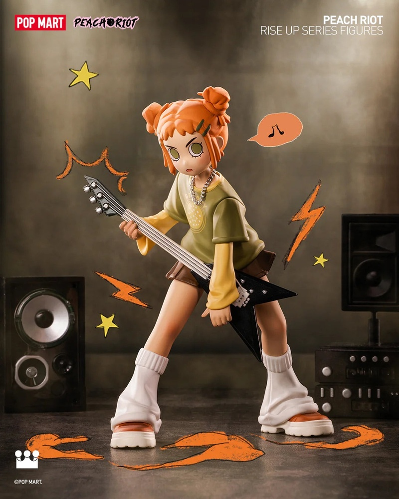
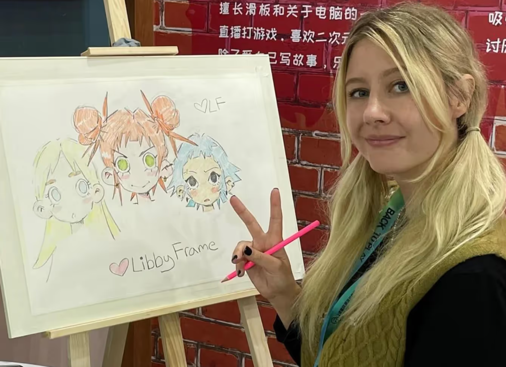
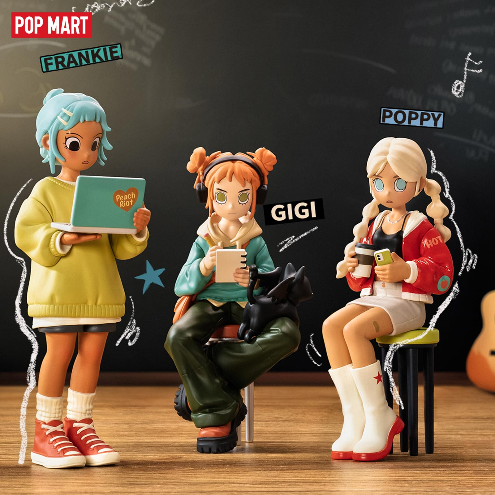

Character Introduction
Gigi
Lead vocalist + Guitarist
Zodiac Sign: Aries
Likes
- Attention
- Sour candy
- Parties
- Guitars
- Horror Movies
Hates
- School
- Bossy People
- Being bored
- Vegetables
Peach Riot is a Pop Mart figurine series created by Libby Frame. They are a fictional high school punk band which is formed by 3 memebers - Gigi, Frankie, and Poppy. They release music that you can listen to on Spotify, Youtube and Apple Music.
Lead vocalist + Guitarist
Zodiac Sign: Aries
Likes
Hates
Drummer
Zodiac Sign: Taurus
Likes
Hates

Bassist and Keyboardist
Zodiac Sign: Cancer
Likes
Hates
Peach Riot was created by Libby Frame.
Libby Frame is an artist based in Los Angeles. She majored in Illustration Design and minored in Film Studies during her college years. Post-graduation, she embarked on a career as a freelance artist, focusing on character design and conceptual art, often weaving storytelling into her creations.
Joining POPMART in 2024, these characters have quickly become a fan favorite! Peach Riot is inspired by the riot girl band movement and the whole grunge scene. Set in the 90s in the Pacific Northwest, they are all American. They were also inspired by the anime FLCL that fought with guitars. They are meant to evoke youth, fun, and music! They somehow are nostalgic but always modern at the same time. A re-imagining of the best of both worlds.
Peach Riot Rise Up
Peach Riot Punk Fairy
Lil Peach Riot: Loading!
Peach Riot Rush Hour
Bloody Valentine
Witchy Punk
Angels